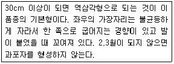
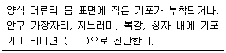

수산양식기사 (2016-08-21 기출문제)
1과목: 어류양식학
1. 자주복의 부화에 대한 설명으로 가장 거리가 먼 것은?
- 부화는 아르테미아의 부화기를 사용하고, 알의 안정을 위해 환수는 하지 않는 것이 좋다.
- 광선을 약 500lx로 한다.
- 약 180L의 부화기에 50만~100만개 정도의 알을 수용한다.
- 부화 직전 난의 수용밀도는 30만개 정도로 낮추는게 좋다.
(정답률: 70%)

2. 성어와 비교하여 치어의 먹이 공급 간격은?
- 대사율이 높아 일반적으로 짧다.
- 크기가 작아 많이 먹지 않으므로 길다.
- 사료의 크기가 작기 때문에 결과적으로 같다.
- 어류의 크기와는 상관이 없이 같다.
(정답률: 86%)
3. 어류의 1차 성징에 속하는 것은?
- 수컷에서는 진한 혼인색, 추성이 나타난다.
- 생식소가 성호르몬의 지배를 받아 정소나 난소로 분화된다.
- 지느러미(특히, 꼬리지느러미)가 확대된다.
- 암컷에서는 복부의 팽대, 동그스름한 체형이 나타난다.
(정답률: 81%)
4. 어류의 조합이 먹이연쇄 혼합양식에 적합한 것은?
- 잉어 – 붕어
- 블루길 - 베스
- 초어 – 백련어
- 뱀장어 - 숭어
(정답률: 69%)
5. 다음 중 잉어의 가두리 양식 적지 조건으로 가장 거리가 먼 것은?
- 갈수기에도 수심 5~6m 이상인 곳
- 4월 하순과 10월 초순의 수온이 15°C 정도 되는 곳
- 가두리 밑바닥에 수초가 번무하여 산소공급이 충분한 곳
- 호소 내에 물의 소통이 잘되는 환경조건을 갖춘 곳
(정답률: 63%)
6. 세계 최초의 국립양어장은 언제, 어디서 만들어졌다고 알려져 있는가?
- 기원전 300년경 일본
- 기원전 500년경 스페인
- 기원전 100년경 로마
- 기원전 1800년경 이집트
(정답률: 64%)
7. 넙치 난의 특징이 아닌 것은?
- 분리부성란이다.
- 완숙 시 난경은 0.94 ~ 0.98 mm 정도이다.
- 유구는 1개이다.
- 수온 18~20°C 범위에서 약 36시간 후 부화한다.
(정답률: 75%)
8. 채널메기의 산란습성을 바르게 설명한 것은?
- 산란은 움푹 패인 곳, 돌이나 나무토막 사이 등의 으슥한 곳에서 한다.
- 암수는 1년에 여러 번 산란한다.
- 알은 분리부성란으로 물밑의 그늘진 곳이나 적당한 장소가 없으면 구덩이를 파고 알을 낳는다.
- 산란 후에 암컷이 알을 지키면서 지느러미로 수류를 일으켜 산소를 공급한다.
(정답률: 70%)
9. Artemia의 부화조건으로 틀린 것은?
- 적정 농도의 해수를 사용한다.
- 부화수온은 28°C 전후이다.
- 강한 에어레이션을 계속한다.
- 조도는 7000lx로 유지한다.
(정답률: 73%)
10. 산란기 무지개송어의 성숙상태를 조사하기위한 MS-022의 마취농도는?
- 0.1 ~ 0.15 ppm
- 1 ~ 1.5 ppm
- 10 ~ 15 ppm
- 100 ~ 150 ppm
(정답률: 62%)
11. 감성돔의 자어 난황 흡수기 이후의 초기먹이로 가장 적합한 것은?
- 아르테미아
- 로티퍼
- 클로렐라
- 스피룰리나
(정답률: 78%)
12. 방어의 종묘를 선택할 때 고려해야 하는 내용과 거리가 먼 것은?
- 겉보기에 둥글둥글하게 살이 쪄 있는 것
- 몸 빛깔이 검은색을 띠고 어체의 크기가 고른 것
- 다른 개체와 무리를 지어 정상적인 유영을 하고 있는 것
- 운반하기 용이하게 종묘의 크기가 8 ~30g정도 되는 것
(정답률: 85%)
13. 미지성장인자(U.G.F.)의 효과를 위해서 쓰일 수 있는 사료의 원료는?
- 효모
- 어분
- 육분 및 골분
- 기름을 짠 찌꺼기
(정답률: 87%)
14. 카와찌붕어의 특징이 아닌 것은?
- 산란의 예상이 힘들다.
- 월동 중의 체중감소가 적다
- 질병은 체표의 손상에 기인되는 경우가 많다.
- 사람과 잘 익숙해진다.
(정답률: 76%)
15. 넙치의 산란이 가장 활발히 일어나는 시간은?
- 18~21시
- 10~12시
- 24~03시
- 06~09시
(정답률: 72%)
16. 방어 양식에서 생사료 공급 시 주의해야 할 사항이 아닌 것은?
- 멸치는 단독사료로 장기간 공급하지 않는다.
- 냉동시킨 생선은 해동시키지 않고 바로 초퍼에 갈아서 공급한다.
- 하루에 2~3회 먹이를 공급하는 것이 성장에 좋다.
- 방어는 탐식성이어서 표층과 바닥에서 모두 먹이를 잘 먹으므로 여유 있게 공급한다.
(정답률: 79%)
17. 냉수성 해산어류에서 주로 요구되는 필수 지방산은?
- 리놀렌산(18:2n-6)
- 올레산(18:1n-9)
- 아라키돈산(20:4n-6)
- 오메가-3 고도불포화지방산
(정답률: 81%)
18. 다음 중 실뱀장어의 먹이붙임용으로 가장 좋은 것은?
- 고등어
- 쇠고기
- 실지렁이
- 어분
(정답률: 81%)
19. 방류 재포 양식에 적합한 어종은?
- 연어
- 송어
- 가자미
- 잉어
(정답률: 77%)
20. 은어의 성숙을 억제시키는 가장 좋은 방법은?
- 물을 교환해 준다.
- 먹이를 충분히 준다.
- 광선을 쬐어준다.
- 수온을 높여준다.
(정답률: 69%)
2과목: 무척추동물양식학
21. 수술이 끝난 진주조개를 직접 양성장에다 옮겨서 양성하지 않고 중간양성을 하는 주된 이유는?
- 탈핵과 폐사 개체수를 파악하기 위해
- 환경에 잘 적응시키기 위해
- 양성관리 작업량을 적게 하기 위해
- 폐사를 방지하고 성장을 촉진시키기 위해
(정답률: 64%)
22. 종굴의 수송 시 주의할 점이 아닌 것은?
- 되도록 수송시간을 짧게 한다.
- 종굴의 색채가 비슷한 것끼리 모아서 수송한다.
- 기온이 낮은 대일수록 좋다.
- 습도는 높은 편이 좋다.
(정답률: 68%)
23. 다음 중 보리새우 조에아기의 먹이로 가장 적절한 것은?
- Skeletonema costatum
- Brachionus plicatilis
- Calanus sp.
- Artemia sp.
(정답률: 62%)
24. 노화 현상이 진행 중인 양성장에 대한 시급한 대책이 아닌 것은?
- 양식품종 전환
- 밀식 방지
- 윤작
- 바닥 환경 개선
(정답률: 78%)
25. 참전복 양식에 있어서 초기 치패관리에 관한 내용으로 적절하지 못한 것은?
- 치패는 성패보다 단위체중당 산소 소비량이 많기 때문에 산소를 충분히 공급해야 한다.
- 치패는 한해성 특성으로 인해 고수온기에는 주의해야 하지만, 2°C 이하의 저수온에서는 잘 견딘다.
- 폐사율이 높은 시기는 주구각이 생길 무렵과 제1호흡공이 생길 때이다.
- 각장이 2cm이상 되면 먹이가 부족하게 되므로 소형해조류를 공급해준다.
(정답률: 74%)
26. 보리새우의 종묘생산 과정 중에서 유생의 폐사율이 가장 높은 시기는?
- 포스트라바(Postlarva) 기
- 노플리우스(Naauplius) 기
- 미시스(Mysis) 기
- 조에아(Zoea) 기
(정답률: 59%)
27. 부착시기에 도달한 참굴 성숙 부유 유생의 크기는?
- 250μm 이하
- 300μm 내외
- 350~400μm
- 400μm 이상
(정답률: 53%)
28. 다음 양식동물 중 유생의 부유기간이 가장 짧은 종은?
- 멍게 (우렁쉥이)
- 까막전복
- 피조개
- 진주조개
(정답률: 66%)
29. 다음 중 조개류의 유생사육용 먹이로써 가장 알맞은 종은?
- Brachionus plicatilis
- Skeletonema costatum
- Isochrysis sp.
- Platymonas sp.
(정답률: 54%)
30. 대부분의 모패가 방란 가능한 완숙기로 되는 참전복의 적산수온은?
- 500°C
- 1000°C
- 1500°C
- 2000°C
(정답률: 86%)
31. 굴의 수하양성법으로 적합하지 않은 것은?
- 뗏목식
- 밧줄식
- 말목식
- 조위망식
(정답률: 74%)
32. 참문어를 연중 양식할 수 있는 수온조건을 갖춘 수역은?
- 제주도 연안
- 남해안
- 서해 중부 연안
- 동해 남부 연안
(정답률: 52%)
33. 바지락 양식에 관한 설명으로 적절하지 못한 것은?
- 완류식 채묘법으로 섶꽂이식을 많이 사용한다.
- 지반변동이 일어나기 쉬운 하구 근처에서 치패가 많이 발생한다.
- 종묘의 방양방법에는 석시법과 조시법이 있으며, 조시법의 일손이 더 많이 들어간다.
- 양성장의 지반은 바지락이 잠입하기 쉽게 갈이를 해 주어야 한다.
(정답률: 67%)
34. 무척추동물 유생 발달단계의 명칭이 틀린 것은?
- 굴 : 수정란 → 담륜자 → D상 유생 → 각정기 유생 → 성숙 부유 유생
- 전복 : 수정란 → 담륜자 → 피면자 → 포복기 유생
- 대하 : 노플리우스 → 조에아 → 미시스 → 메갈로파
- 해삼 : 수정란 → 오우리쿨라리아 → 돌리올라리아
(정답률: 69%)
35. 고막의 주 서식장으로 가장 적합한 것은?
- 간조 시에 노출되는 부드러운 펄질의 조간대
- 수심 10 ~ 30m 정도의 사니질
- 저조선으로부터 20m 정도의 개흙질
- 간출되지 않은 암반
(정답률: 70%)
36. 고막류 중 평균 방사늑수가 가장 적은 종은?
- 고막
- 피조개
- 새고막
- 큰이랑피조개
(정답률: 63%)
37. 참가리비의 수하식 양성에 대한 설명으로 틀린 것은?
- 수심 30~40m인 지역에서 채롱을 이용할 수 있다.
- 수하식 채롱양성은 출하까지 3년 이상 걸린다.
- 채롱식 양성에서 패각물림 현상은 패각의 크기가 작을수록 빈번하게 나타난다.
- 귀매달기 양성에서는 각장이 5cm정도의 1년생 가리비가 적합하다.
(정답률: 59%)
38. 다음 중에서 이동성을 고려하여 양성시설을 해야 하는 종은?
- 피조개
- 진주담치
- 대합
- 새고막
(정답률: 84%)
39. 전복의 일간먹이 섭취율 계산식의 항목이 아닌 것은?
- 사육일수
- 각장크기
- 공급한 먹이량
- 먹고 남은 잔량
(정답률: 68%)
40. 진주담치의 양식에 대한 설명으로 틀린 것은?
- 남해안에서 주 산란기는 3~4월이다.
- 유생의 부착층은 표층으로부터 1 ~2m이다.
- 유생 출현시기가 짧다.
- 산란 적정수온은 12~14°C 이다.
(정답률: 51%)
3과목: 해조류양식학
41. 실내수조의 미역채묘에서 유주자의 착생은?
- 밝은 쪽에 잘 붙는다.
- 어두운 쪽에 잘 붙는다.
- 수조의 위쪽에 잘붙는다.
- 수조의 전면에 잘 붙는다.
(정답률: 56%)
42. 각포자 방출 촉진에 알맞은 조건은?
- 5°C 이하에서 단일처리
- 10~20°C에서 단일처리
- 5°C 이하에서 장일처리
- 10~20°C 애서 장일처리
(정답률: 66%)
43. 재생력을 이용하여 양식할 수 있는 해조류는?
- 김
- 다시마
- 우뭇가사리
- 홑파래
(정답률: 77%)
44. 다음 중 감태의 유주자 방출시기로 가장 적절한 것은?
- 봄 ~ 여름
- 여름
- 가을 ~ 겨울
- 겨울
(정답률: 58%)
45. 유주자의 주광성을 채묘에 활용하는 종류는?
- 김
- 미역
- 홑파래
- 다시마
(정답률: 70%)
46. 다시마 양성 시 시기별로 수위조절을 하는 방법이 틀린 것은?
- 가을에서 3월까지는 수면 하 1m
- 봄 4 ~ 5월에는 수면 하 1.5m
- 여름 6 ~ 7월에는 수면 하 2~2.5m
- 한 여름의 8월에는 수면 하 8~10m
(정답률: 80%)
47. 규조류의 부착이 심한 김을 제품으로 만들기 전에 처리하는 내용으로 적합하지 않은 것은?
- 김을 보자기에 넣어 밟아준다.
- 하루 정도 음건시킨다.
- 탄산나트윰(NaCO3)용액에 담가 두었다가 씻어낸다.
- 고속탈수기로 탈수한 뒤 냉장한다.
(정답률: 52%)
48. 다음 중 꼬시래기의 발아가 가장 잘되는 장소는?
- 간조 시 완전히 노출되는 모래밭
- 조수웅덩이가 형성되어 있는 모래밭
- 해안에 돌출한 암반
- 하구부근의 저조선 아래
(정답률: 47%)
49. 톳의 증식을 위해여 씨뿌림을 할 때 뿌리는 씨는?
- 어린배
- 접합자
- 유주자
- 과포자
(정답률: 53%)
50. 조가비 사상체의 각포자 방출 상태를 바르게 설명한 것은?
- 각포자낭지의 끝 개구부를 통하여 방출된다.
- 각포자낭마다 개구부가 있어서 그곳으로 방출된다.
- 조가비 안에서 방출된 포자가 석회질을 녹이면서 표면으로 나온다.
- 각포자낭지마다 모두 표면까지 올라와서 각각 독자적으로 방출된다.
(정답률: 68%)
51. 미역 종묘 가이식 시기를 결정하는 요소로 옮지 않은 것은?
- 내만의 경우 22~23°C 이하, 외해의 경우 20°C이하에서 가이식을 시작한다.
- 생장은 가이식이 빠를수록, 또 그 때의 아포체가 클수록 빠르다.
- 싹녹음을 피하기 위하여 9월 하순까지는 가이식을 끝낸다.
- 조석상으로는 소조 직후가 가이식의 적기이다.
(정답률: 50%)
52. 다음은 어느 김의 특성을 설명한 것인가?

- 참김
- 둥근돌김
- 큰참김
- 큰방사무늬김
(정답률: 67%)
53. 다시마의 종묘 배양과정에서 배우체의 수정률이 가장 좋은 조도는? (단, 수온은 13°C 전후일 경우)
- 500lx
- 2000lx
- 3000lx
- 5000lx
(정답률: 58%)
54. 미역의 인공채묘용으로 가장 적합한 포자엽(성실엽)의 처리방법은?
- 채취 즉시 사용한다.
- 담수에다 5분간 담근 후 사용한다.
- 찬 해수에다 5분간 담근 후 사용한다.
- 수 시간에서 하룻밤 정도 그늘에다 둔 후 사용한다.
(정답률: 61%)
55. 1년생 다시마가 포자를 방출하는 시기는?
- 초여름 ~ 초가을
- 초가을 ~ 초겨울
- 초겨울 ~ 초봄
- 초봄 ~ 초여름
(정답률: 44%)
56. 굵은 자갈이나 돌 등이 산재한 간석지에서 양식 가능성이 가장 높은 종은?
- 청각
- 곰피
- 풀가사리
- 톳
(정답률: 59%)
57. 김 엽체가 함유하고 있는 색소가 아닌 것은?
- 푸코크산틴
- 클로로필 a
- 피코에리드린
- 피코시아닌
(정답률: 58%)
58. 김 양식에서 봉투식 야외인공채묘에 대한 내용이 아닌 것은?
- 제한된 어장에서만 채묘할 수 있다.
- 사상체의 양이 적게 소요된다.
- 포자의 부착이 균일하다.
- 해적생물의 부착이 적다.
(정답률: 55%)
59. 김 냉장발의 장점과 가장 관계가 먼 것은?
- 초기의 김갯병 피해 극복
- 2차아에 의한 번식
- 양식기간의 연장
- 해적생물의 구제
(정답률: 66%)
60. 김 양식장에서 소비가 가장 많은 비료분은?
- 규산염
- 질산염
- 인산염
- 칼슘염
(정답률: 71%)
4과목: 양식장환경
61. 환경정책기본법상 해역의 생태기반 해수수질기준에서 등급 Ⅱ(좋음)의 수질평가 지수값(Water Quality Index)은?
- 23 이하
- 24~33
- 34~46
- 47~59
(정답률: 69%)
62. 육상에서 종묘 배양장이나 양식장을 시설할 때 주로 대형 수조의 하누바 건물 등의 외형을 유지하는데 사용되는 재료로 주로 쓰이는 것은?
- 콘크리트와 금속재료
- FRP나 합성고무
- 목재 및 코르타르
- PP, PE 등의 합성수지
(정답률: 82%)
63. 기본형 에어레이션법이 아닌 것은?
- 낙차 에어레이션법
- 확산 에어레이션법
- 벤투리관 에어레이션법
- 표면 에어레이션법
(정답률: 78%)
64. 용존 물질을 제거하는 여과 장치 중 그 원리가 다른 것과 차이가 나는 것은?
- 살수식 여과
- 침수식 여과
- 회전식 여과
- 활성 오니법 여과
(정답률: 86%)
65. 수역의 자정작용에 대한 내용이 틀린 것은?
- 현탁물이 해수와 같은 전해질과 혼합되면 응집침전 분리된다.
- 알칼리도가 높은 물은 중화되어 pH변화가 크게 없다.
- 생화학반응에 의한 유기물질의 무기와나 그 생성물질을 다시 유기화하여 고정하는 동화작용을 말한다.
- 수역에 있어서는 혐기성조건만을 포함한다.
(정답률: 73%)
66. 질산염과 인삼염이수중의 식물성 플랑크톤에 의해 섭취되거나 분해결과 수중에 용출되어 나올 때 각각 어떤 비율로 일어나는가?
- N : P = 1 : 16
- N : P = 16 : 1
- N : P = 8 : 1
- N : P = 1 : 8
(정답률: 57%)
67. 다음 중 호소에서의 부영양화와 관계가 가장 먼 것은?
- 탁도가 높다.
- 생물군의 다양성이 낮아진다.
- 나쁜 냄새를 내어 물맛을 나쁘게 한다.
- 투명도가 높다.
(정답률: 78%)
68. 생물학적 여과 중 질산화 과정에 참여하는 세균은?
- 슈도모나스(Pseudomonas)
- 에로모나스(Aeromonas)
- 니트로소모나스(Nitrosomonas)
- 스트렙토코쿠스(Streptococcus)
(정답률: 81%)
69. 수역의 자정작용에 대한 내용이 틀린 것은?
- 해수에 유출된 기름은 해면에 기름막을 만들어 대기 중의 산소 유입을 막는다.
- 기름은 물에 혼합되지 않기 때문에 부유성 생물에만 영향을 미친다.
- 해수 중에 유입된 기름은 박테리아에 의하여 서서히 분해된다.
- 기름을 제거하기 위한 유화제가 오히려 생물에 해를 줄 수 도 있다.
(정답률: 82%)
70. 다음 중 유기물에 의한 오렴 정도를 파악하기 위한 환경조사 항목으로 가장 적합한 것은?
- BOD
- DO
- pH
- Salinity
(정답률: 73%)
71. 생물학적 여과의 1차 대상 오염 성분은?
- 암모니아
- 질산염
- 이산화탄소
- 질소가스
(정답률: 81%)
72. 효과적인 자회선 조사에 대한 설명으로 가장 적합한 것은?
- 자외선등을 물위에 높게 매달아 자외선이 물표면에 고르게 비치도록 한다.
- 많이 오염된 물일수록 소독효과가 더 크다.
- 자외선등을 수중에 설치할 경우 물표면에 설치할 때 보다 물 깉이를 얕게 해준다.
- 수면, 수중 조사방법 모두 별다른 차이가 나지 않는다.
(정답률: 51%)
73. 하천의 일반적인 특성과 다른 것은?
- 유속이 가장 빠른 곳은 하류 쪽이다.
- 하류의 바닥에는 모래나 점토가 많다.
- 상류의 바닥에는 돌들이 많다.
- 하류 쪽은 상류에 비하여 수온의 변화가 적다.
(정답률: 77%)
74. 1기압 하에서 용존산소의 포화도가 가장 큰 물은?
- 0°C 해수
- 4°C 해수
- 0°C 담수
- 4°C 담수
(정답률: 67%)
75. 새우 종묘생산 시설은 충분한 양의 공기가 공급되도록 설계되어야 한다. 소형 에어스톤(Ø2~3cm)을 설치하려고 할 때 가장 적합한 설치 조건은?
- 수조 1개당 에어스톤 10개 정도
- 물 1ton당 에어스톤 1개 정도
- 수면적 1m2당 에어스톤 1개 정도
- 수심 10cm 당 에어스톤 1개 정도
(정답률: 63%)
76. 해수의 질산염 분석방법은?
- Nessler 법
- Indo phenol 법
- GR
- 구리 카드뮴 환원법
(정답률: 78%)
77. 식물플랑크톤에 대한 설명이 옳은 것은?
- 낮에 O2를 생산하고 밤에 CO2를 생산한다.
- 낮에 CO2를 생산하고 밤에 O2를 생산한다.
- 낮과 밤 모두 O2만 생산한다.
- 낮과 밤 모두 CO2만 생산한다.
(정답률: 79%)
78. 다음 중 정수식 못 양식에서 물의 보충에 관한 내용으로 가장 적합한 것은?
- 증발과 누수에 의한 물의 감소량 만큼 보충한다.
- 매일 총수면적의 5%를 보충한다.
- 매주 어류 방양량의 2%를 보충한다.
- 자연적으로 해결되므로 보충할 필요가 없다.
(정답률: 80%)
79. 다음 중 틸라피아를 원형수조에서 양성하고자 할 때 탱크내의 오물을 잘 제거할 수 있고 또 사육어류의 적절한 운동을 위한 탱크 내의 유속으로 가장 적절한 것은?
- 초당 0.5~10cm
- 초당 3.5~5.0cm
- 초당 7.5~10.0cm
- 초당 20cm 이상
(정답률: 57%)
80. BOD 시험 시 사용되는 지시약은?
- 페놀프탈레인
- 메틸오렌지
- 녹말용액
- 리트머스 시험지
(정답률: 61%)
5과목: 수산질병학
81. 새우류의 바이러스 질병 중 원인바이러스가 공통점이 없는 것은?
- WSSV
- SEMBV
- HHNBV
- IMNV
(정답률: 50%)
82. 금붕어의 체표에 궤양병이 생겼다면 다음 중 그 원인으로 가능성이 가장 높은 것은?
- Nocardia sp.에 의한 것이다.
- Vibrio sp.에 의한 것이다.
- Aeromonas salmonicida에 의한 것이다.
- Ichthyophonus hoferi에 의한 것이다.
(정답률: 55%)
83. 환경수에서 검출되기도 하며 인간의 건강에 영향을 줄 수있는 것으로 인식되고 있어 위생에 주의를 요하는 병원체가 아닌 것은?
- Vibrio vulnificus
- Vibrio cholerae Non-01
- Vibrio parahaemolyticus
- Vibrio anguillarum
(정답률: 54%)
84. 먹이 중 a-Toclpherol(비타민 E)이 부족할 때 잉어에 발생할 가능성이 가장 높은 증상은?
- 지느러미가 부식된다.
- 아가미가 부식된다.
- 피부가 부식된다.
- 등이 굽어진다.
(정답률: 68%)
85. 연어과 어류의 세균성 신장병(BKD)의 주요 증상은?
- 신장과 그 외 장기에 백점 및 백반상의 병소 형성
- 두부, 등, 꼬리지느러미에 두터운 점액막 형성
- 체표 전면에 점상출혈과 모세혈관 확장
- 아가미표면에 팽윤된 환부 형성
(정답률: 74%)
86. 효모가 포함된 사료를 송어에 먹였더니 위에 가스가 발생하여 복부가 팽창되었다면 가장 관련이 깊은 균은?
- Ichthyophonus sp.
- Saprolegina sp.
- Candida sp.
- Fusarium sp.
(정답률: 58%)
87. 어류의 바이러스병을 PCR법으로 진단하고자 할 때 원인 바이러스가 RNA 바이러스 군에 속하는 것은?
- 블루길 바이러스병
- 차넬메기 바이러스병
- 산천어 헤르페스 바이러스병
- 잉어 폭스병
(정답률: 45%)
88. 무지개송어의 바이러스성 출혈성 패혈즐의 주 감염 경로는?
- 사료
- 닻벌레
- 함꼐 사육되는 병어
- 지느러미
(정답률: 55%)
89. 병리성 갯병으로써 김 사상체에도 기생하는 병원성 미생물은?
- Pythium 속
- Olpidiopsis 속
- Licomphora 속
- Leucothrix 속
(정답률: 44%)
90. 방어의 연쇄구균증에 관한 설명 중 틀린 것은?
- 안구돌출과 아가미 뚜껑이 적변된다.
- Streptococcus sp.균이 감염되어 발병하며, 발육 최적온도는 20~37°C이다.
- 병리학적으로는 지느러미 출혈, 항문의 탈장 및 주둥이 부식이 특징적이다.
- 멸치만을 장기간 투여하거나 선도 불량한 먹이를 투여하면 발병하기 쉽다.
(정답률: 47%)
91. 방어 내장의 각 장기에 결절이 생기는 특색이 있는 병원균은?
- Vibrio anguillarum
- Nocardia seriolae
- Lactococcus garviae
- Aeromonas hydrophila
(정답률: 70%)
92. 영양분의 부족에 의하여 발생하느 김 사상체의 질병은?
- 황반병
- 닭살
- 녹변병
- 적변병
(정답률: 69%)
93. 담수산 어종에서 질병을 일으킬 수 있는 것은?
- Tenacibaculumm maritimum
- Viral Nervous Necrosis virus
- Benedenia seriolae
- Aeromonas hydrophila
(정답률: 71%)
94. 방어의 아가미에 기생하여 피해를 주는 기생충은?
- Argulus japonicus
- Caligus spinosus
- Pseudoergasilus zacconis
- Lernaea cyprinacea
(정답률: 45%)
95. 수심이 얕은(50cm) 잉어 양어지에서는 월동 후 폐사하는 잉어를 많이 볼 수 있는데 이 경우 잉어가 심한 피하출혈로 죽었다면 어떤 균에 의한 감염으로 생각할 수 있는가?
- Flavobacterium columnare
- Vibrio anguillarum
- Pasteurella piscicida
- Aeromonas hydrophila
(정답률: 42%)
96. 방어 및 참돔의 피부에 작은 수포가 산재되어 있거나 또는 집단적으로 형성되어 피부 결합조직세포가 거대화됨으로써 외관상 불쾌감을 주는 질병은?
- Birnavirus 병
- Herpesvirus 병(OMV)
- Lymphocystis 병
- Rhabdovirus 병
(정답률: 77%)
97. Hexamita증의 설명이라고 볼 수 없는 것은?
- 경구적으로 감염되며, 불량사료를 먹였을 때 잘 감염된다.
- 병어는 회전운동을 하고 복부팽만, 안구돌출의 증상을 나타낸다.
- 창자를 절개해보면 먹이가 가득 차 있다.
- 기생성 편모충이며 연어 치어의 장관 점막 상피세포에 기생한다.
(정답률: 66%)
98. ( )안에 가장 적합한 것은?

- 암모니아 중독증
- 아질산 중독증
- 가스병
- 산소 결핍증
(정답률: 81%)
99. 어류 병원세균 중 편성 병원세균은?
- Edwardsiella tarda
- Vibrio anguillarum
- Photobacterium damselae subsp. piscicida
- Aeromonas hydrophila
(정답률: 57%)
100. 킬로도넬라병의 병원체에 대한 설명으로 틀린 것은?
- 원충류 중 섬모충의 일종이다.
- 성충의 모양은 구형이다.
- 충체의 내부에 큰 핵과 작은 핵이 있다.
- 생활환경이 악화되면 피낭체를 형성한다.
(정답률: 44%)
"알의 안정을 위해 환수는 하지 않는 것이 좋다."라는 설명은 부화기 내부의 습도와 관련된 내용으로, 환수를 하게 되면 습도가 높아져 알의 표면이 젖어서 부패하거나 곰팡이가 생길 수 있기 때문이다. 따라서 부화기 내부의 습도를 조절하기 위해서는 환기를 통해 산소를 공급하는 것이 좋다.